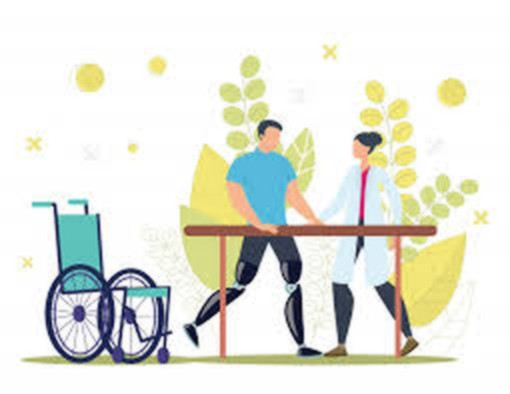

Recuperar movimiento, recuperar vida.
Atención especializada en rehabilitación integral, estudios electrodiagnósticos y seguridad y salud en el trabajo, con un servicio humanizado e individualizado para la población de San Andrés, Providencia y Santa Catalina.

Una IPS pensada para el archipiélago.
Constituida en 2022, SAIFIS SAS es una Institución Prestadora de Salud (IPS) de atención especializada en medicina física y rehabilitación, y en seguridad y salud en el trabajo. Buscamos brindar servicios diseñados para el diagnóstico, pronóstico y tratamiento de las patologías que generan alguna alteración funcional, con una atención humanizada, segura y de calidad — pensando en el bienestar del paciente, su familia y su comunidad.
Eficiencia y seguridad del paciente
Cada proceso está diseñado para proteger al paciente y usar bien su tiempo, desde el primer contacto hasta el seguimiento.
Trabajo en equipo y actitud de servicio
Un equipo con responsabilidad y vocación humanizadora, enfocado en la funcionalidad y la independencia del paciente.
Acceso oportuno en todo el archipiélago
Que los pacientes de San Andrés, Providencia y Santa Catalina accedan a tiempo a servicios que devuelvan capacidades perdidas por enfermedad o lesión.
Salud especializada, con calidad y seguridad
Somos una IPS de atención en salud especializada en rehabilitación integral, estudios electrodiagnósticos, y seguridad y salud en el trabajo, brindando un servicio humanizado e individualizado con calidad y seguridad, que responde a las necesidades de salud del paciente.
Acceso oportuno para el archipiélago
Para el año 2027, los pacientes de la población de San Andrés, Providencia y Santa Catalina con necesidad del servicio tengan acceso de manera oportuna, con el fin de mejorar las capacidades, funcionalidad e independencia que hayan perdido por una enfermedad y/o lesión originada en las actividades cotidianas o el rol laboral.
Cuatro líneas de atención, un mismo objetivo.
Ayudar a recuperar las capacidades e independencia que se hayan perdido por una lesión o enfermedad, en todas las edades.
Consulta de medicina física y rehabilitación
Atención de patologías del sistema nervioso central y periférico, y del sistema musculoesquelético y articular, para lactantes, niños, adolescentes, adultos y adultos mayores.
Seguridad y salud en el trabajo
Sistema de Gestión SG-SST: política, organización, planificación, evaluación y auditoría para anticipar y controlar riesgos laborales.
Estudios electrodiagnósticos
Estudios de conducción nerviosa que miden la actividad eléctrica de músculos y nervios para diagnosticar patologías neuromusculares.
Procedimientos terapéuticos
Infiltraciones y bloqueos guiados, y aplicación de toxina botulínica, junto a capacitaciones sobre patologías de origen laboral.
Estudios de conducción nerviosa
Realizados para diagnosticar patologías del sistema nervioso central, periférico y muscular.
Infiltraciones y bloqueos
Procedimientos guiados para el manejo de patologías musculoesqueléticas y de origen laboral.
Todo lo que necesita su empresa, en un solo lugar.
Empecemos su proceso de recuperación.
San Andrés Islas
Edificio Aniro, tercer piso,consultorio 301 Con agenda en Providencia
y Santa Catalina